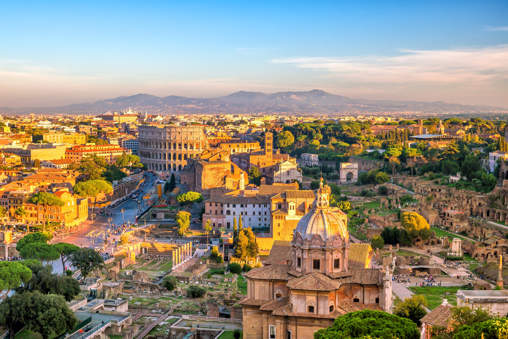

- PARÍS, FRANCIA

París es la capital de Francia y su ciudad más poblada. Capital de la región de Isla de Francia (o "Región Parisina"), constituye el único departamento unicomunal del país. La ciudad de París, dentro de sus estrechos límites administrativos, tiene una población de 2.273.305 habitantes en 2015. Sin embargo, en el siglo XX, el área metropolitana de París se expandió más allá de los límites del municipio de París, y es hoy en día, con una población de 12 405 426 habitantes en 2013, la segunda área metropolitana del continente europeo (después de Londres) y la 28 del mundo. Conocida también como la «Ciudad de la Luz» (la Ville lumière), es el destino turístico más popular del mundo, con más de 42 millones de visitantes extranjeros por año.Entre los monumentos de la ciudad figuran la Torre Eiffel, la catedral de Notre Dame, la avenida de los Campos Elíseos, el Arco de Triunfo, la basílica del Sacré Cœur, el Palacio de Los Inválidos, el Panteón, el arco de la Defensa, la ópera Garnier y el barrio de Montmartre, entre otros. También museos como el Louvre, el Museo de Orsay y el Museo Nacional de Historia Natural de Francia, así como un extenso sistema de educación superior. París ocupa un lugar importante en el ámbito de la cultura, la gastronomía, la moda y el lujo.Podría ocupar la primera posición entra las ciudades más populares del mundo; pero esta vez, París, se ha quedado en la tercera posición. La ciudad de la luz, del amor, la ciudad de la literatura, está llena de atracciones suficientes para una vida. Es la única ciudad que tiene dos lugares entre los diez de mayor interés turístico de Europa: la Torre Eiffel y Notre Dame. Pero, ¿qué más? Toda una clase de arte en el Museo del Louvre, callejear por sus barrios como Marais o el Barrio latino, disfrutar de la gastronomía en algunos de sus bistro, pasear por la rivera del Sena o visitar el mundo de Amélie Poulain, ¡París no se acaba nunca!
- ROMA, ITALIA
Roma es una ciudad italiana de 3 776 133 habitantes, capital de la región del Lacio y de Italia. Es el municipio más poblado de Italia y la tercera ciudad más poblada de la Unión Europea. Por antonomasia, se la conoce desde la Antigüedad como la Urbe (Urbs). También es llamada "La Ciudad Eterna". Es la ciudad con la más alta concentración de bienes históricos y arquitectónicos del mundo; su centro histórico delimitado por el perímetro que marcan las murallas aurelianas, superposición de huellas de tres milenios, es la máxima expresión del patrimonio histórico, artístico y cultural del mundo occidental. En 1980, junto a las propiedades extraterritoriales de la Santa Sede que se encuentran en la ciudad y la basílica de San Pablo Extramuros, fue incluida en la lista del Patrimonio de la Humanidad de la Unesco. Roma es el corazón geográfico de la religión católica, ciudad santa del catolicismo y destino de peregrinación (vías romeas) y también la única ciudad del mundo que tiene en su interior una entidad estatal autónoma: el enclave de la Ciudad del Vaticano, que se encuentra bajo el poder temporal del papa. Por tal motivo se le ha conocido también como la capital de dos Estados.La ciudad eterna es una lección de Historia para cualquier viajero. Además, ¿quién no ha sentido la necesidad de viajar a Roma después de ver alguna película clásica de Fellini? ¿O quién no ha querido recorrer la ciudad en Vespa como en Vacaciones en Roma? Hay tanto que hacer en Roma: ir hasta el centro del Imperio Romano, ver el Coliseo y todas las ruinas arqueológicas, el Panteón, cruzar El puente Sant'Angelo, Plaza España, dejarse maravillar con las obras de arte de los Museos del Vaticano. La Basílica de San Pedro del Vaticano, además, es la atracción turística más popular de todas en Europa.